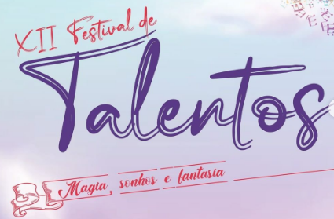

Festival de Talentos
A magia do Festival de Talentos 2022 vai começar! Vem sonhar com a gente. Um tarde inteira para nossos estudantes mostrarem seus talentos com música, dança e outros tipos de arte (poesia, teatro, dublagem, etc)! São 5 minutos para cada apresentação e... ATENÇÃO... teremos concurso de melhor fantasia! Acesse o site oficial do evento para fazer inscrever sua apresentação (quem vai apenas assistir não precisa se inscrever).